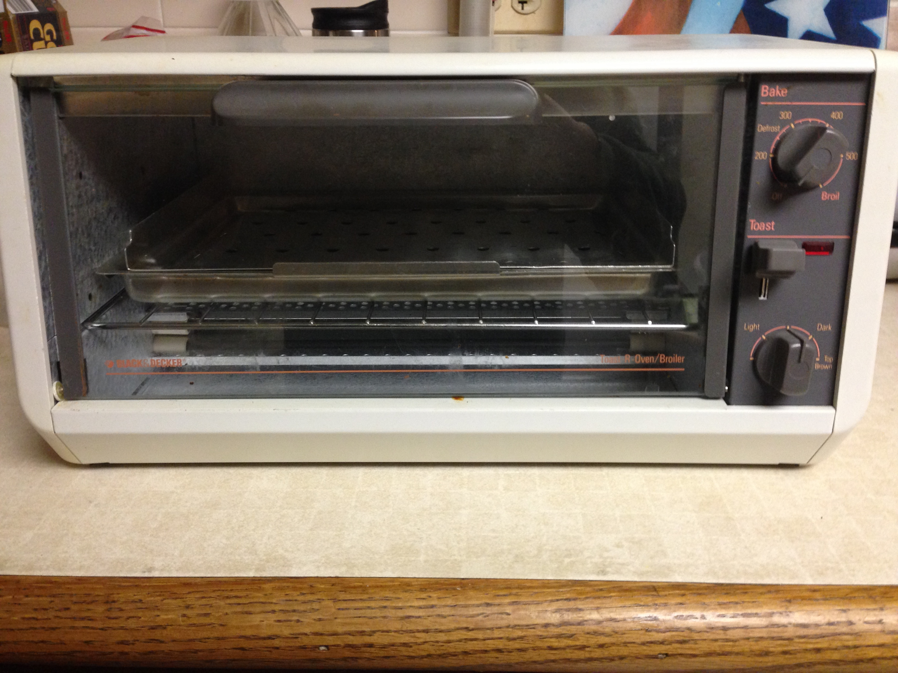
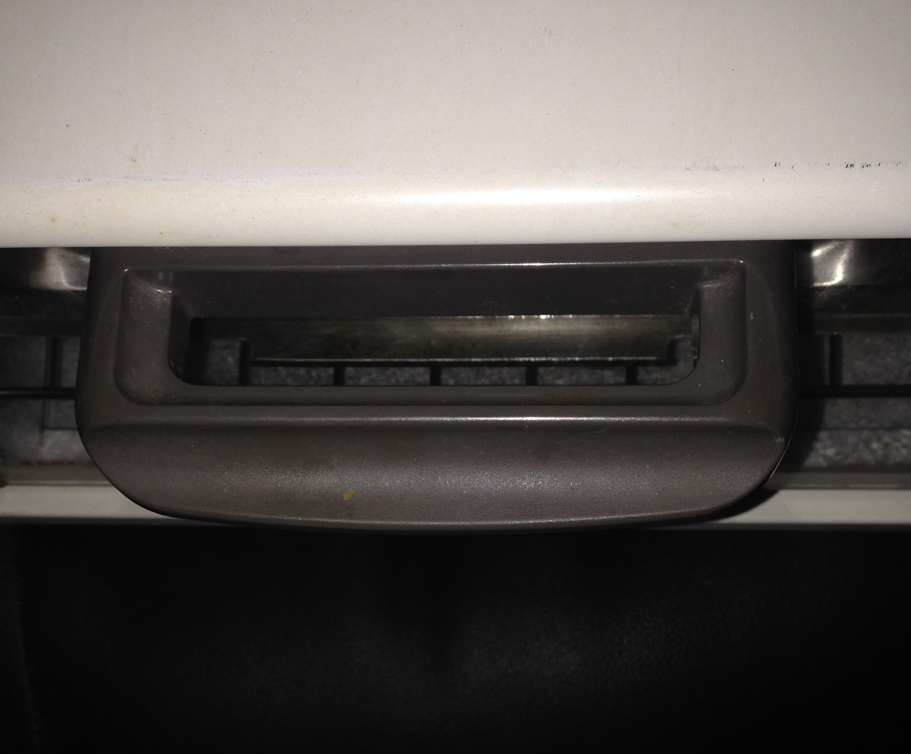
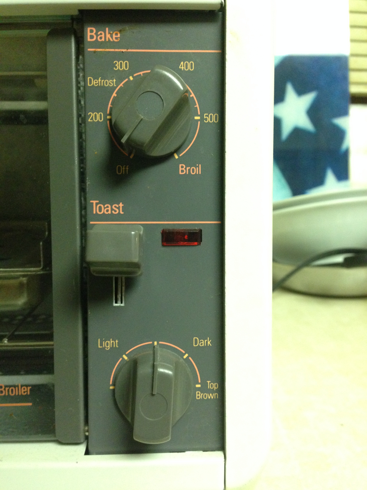
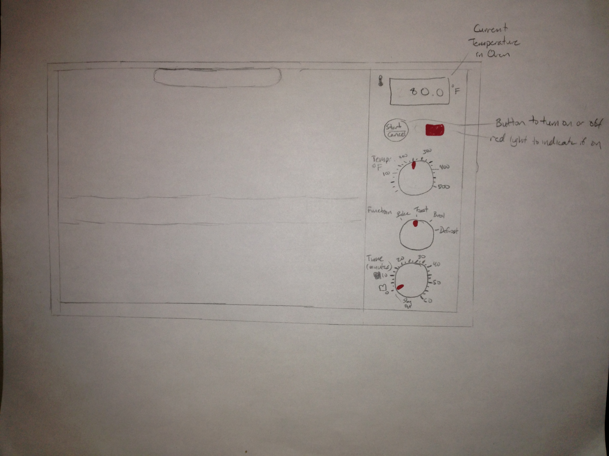
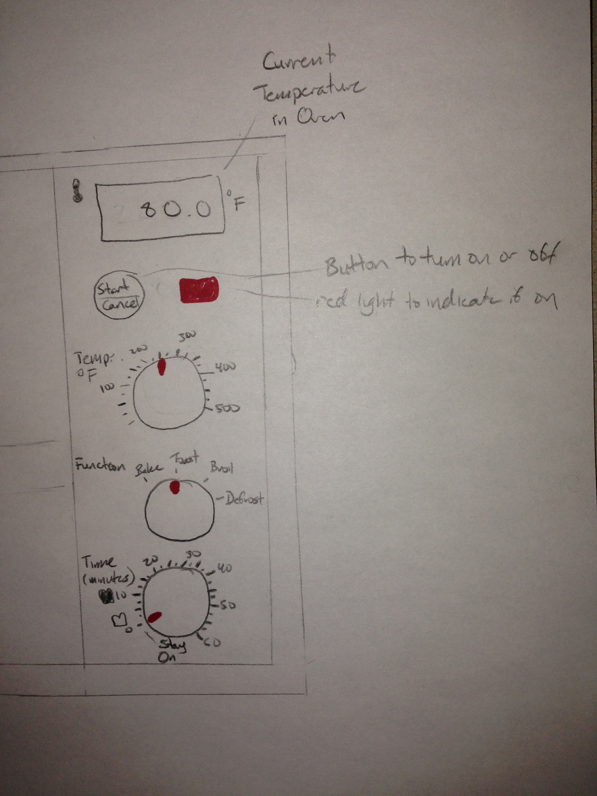

CS 422 Homework 1 - Toaster Oven
Layout of my Toaster Oven
Front image of the toaster oven

Handle of the toaster oven. This is just a standard handle. To open the toaster oven, pull downwards.

Controls of the toaster oven.

There are two main options:
- Bake - use the toaster oven for baking. To use, turn to the desired temperature, wait 5 minutes, then cook. No timer is provided, which means the user must time it his/herself. To turn off, have to turn the dial back to the "Off" area.
- Toast - set to the level of toasting desired, then push down the lever and then wait until it "pops".
The light next to the toast switch turns on when either the bake dial is turned, or if the toast switch is pushed down.
Observations of the Toaster Oven
This toaster oven is good for what it is meant for, toasting, as it makes it straight forward in what you can choose. It delimits the controls to either use this toaster oven to bake or toast.
The Toast option is the most straight forward of the two.
- Positives
- Similar to a regular toaster, just push down the lever
- Ability to choose how dark the user wants the toast on the dial
- Dial design is good, you are able to tell where it is pointed at
- Negatives
- No sense of time when toasting, unable to tell how much longer needed to toast
- No indication of the toaster oven running either than the red light
The Bake option is when the design gets a bit more convoluted.
- Positives
- Temperatures on the dial are delimited by fourths (25 degrees), also it is bright colors on black
- Dial design same as the Toast option, and is good
- Deliminations of dial indicate temperatures to defrost and broil (although do not tell how long to leave in the oven)
- Negatives
- There is no indication for the user to have wait for the oven to heat up prior to placing the food inside of it.
- No indication of the toaster oven running either than the red light
- The user must time the baking by his/herself then manually turn off the toaster oven with the dial, there is no timer that will turn off the oven by itself.
Overall, the toaster oven lacks sense of time. The user will have to either time it themselves or assume when the cooking is complete. This can lead to not just over/undercooking food, it can lead to dangerous conditions like forgetting to turn off the toaster oven.
The deliminations are decent enough for the user to know where to turn the dials and which option to choose, but there is no indication of the toaster oven actually running other than the red light.
Using the Oven
When using this toaster oven, the user will likely use the Toast option only for toasting and the Bake option for everything else.
When toasting the user will set how much they want their bread to be toasted on the dial, then push down the lever. They will then wait for the toaster oven to snap the lever back up to indicate it is done toasting.
The user can use the bake option for many things. When heating a frozen pizza, the user will turn the dial to the temperature which the pizza box specifies and put the pizza in the oven without waiting for it to heat up.
After that, the user will then set a timer somewhere else and wait for the pizza to finish up baking. This will result in an undercooked pizza because the user did not take into account heating up the oven, which is usually unneeded for a toaster oven.
Some other uses of a toaster oven can be:
- Heating up plates
- Toasting nuts
- Making pastries
All of these are possible in this oven, and they are not too difficult if there is prior knowledge in creating them. But, it requires the user to have to track the time themselves, and there are no extra options on the toaster oven to make this any easier.
Toaster Oven Obscurities
The toaster oven helps the user know how to use it by the Toast and Bake options provided. The user can then logic out that in the Bake option that they set the temperature by the dial (although it is not specified that it is temperature, which should be included). The requirement of pre-heaitng the oven is also not shown anywhere.
The Toast option helps the user figure out how to use it by taking the shape of a regular toaster, with the push down lever. It helps the user choose how far they want their toast to be toasted as well.
If a guest were to use the toaster oven, they would more than likely not get that to Bake, they need to pre-heat the oven. They would also probably ask where the timer on the oven is, which does not exist.
The state of the toaster is fairly hidden:
When using Toast, the user does not know how much more time needed for it to complete toasting.
When using Bake has no idea if the temperature they set is the temperature that the toaster oven is actually at, and they do not know how long the toaster oven has been running.
The main mistakes the user would make with this oven is that time is not shown anywhere on the oven, so it is easy to undercook or overcook the food if the user forgets to time it. Another mistake is with the Bake option and the requirement to pre-heat.
Because toaster ovens are made to remove the need to pre-heat ovens, the user may not be aware that with this oven you need to pre-heat it. This toaster oven would need to take a lot of trial and error for the user to get used to it and get what they desire out of it.
Improvements


Some improvements I want to include are:
- Current temperature of the oven - a thermometer of the oven to keep track, making sure the oven is working as intended
- On/Off (Start/Canel) button - turn the oven on and off with a push of a button instead of once when a dial is turned, this keeps it obvious to the user how the oven is turned on and off. The timer only goes down when the button is pushed. When pushed, the red light will turn on.
- Function dial - we are able to combine some functions of the Toast and Bake options, so to combine it, put it inside of the function dial so the user can select what they are doing
- Time dial - the user is able to set the time to cook, when it reaches 0, it will turn off. Just like the toaster oven in the example in the prompt, it has the toast options too from light to dark. Will only go down once when the on/off button is pushed
I included these improvements because the toaster oven I presented lacked two major functions, current temperature and a timer. The current temperature makes sure the oven is working as intended, and if the toaster oven needs to heat up, you can see on the current temperature if it is at the temperature desired.
The timer is there for convenience and to know how much longer the food is required to cook for.
The function dial was created because Baking and Toasting are fairly similar other than how the toaster oven heats up, so I added that to simplify the usage and to give more space for the other controls.
The on/off button was added for a more obvious feeling of turning on the toaster oven. The toaster oven I had turns on when on Bake whenever the dial is turned, which is not ideal, so instead an On/Off button is included.